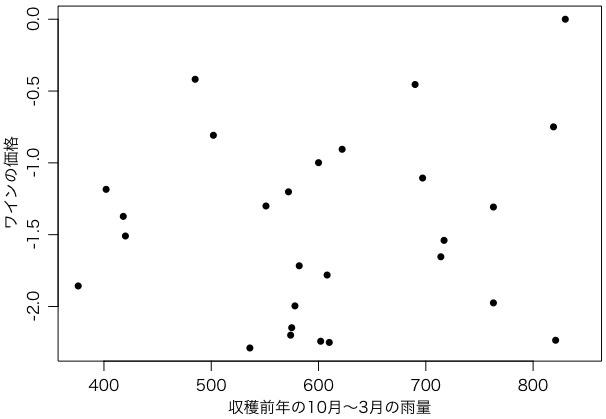

Newton 2013年12月号「統計の威力」特集にあった図です。データは http://www.liquidasset.com/ の左の「6. Articles and Data」をクリックして「Article 3」の「Click here to see the data and the basic regression results」のリンク先にあります。念のためデータを引用しておきます：
OBS VINT LPRICE2 WRAIN DEGREES HRAIN TIME_SV
1 1952 -0.99868 600 17.1167 160 31
2 1953 -0.45440 690 16.7333 80 30
3 1954 . 430 15.3833 180 29
4 1955 -0.80796 502 17.1500 130 28
5 1956 . 440 15.6500 140 27
6 1957 -1.50926 420 16.1333 110 26
7 1958 -1.71655 582 16.4167 187 25
8 1959 -0.41800 485 17.4833 187 24
9 1960 -1.97491 763 16.4167 290 23
10 1961 0.00000 830 17.3333 38 22
11 1962 -1.10572 697 16.3000 52 21
12 1963 -1.78098 608 15.7167 155 20
13 1964 -1.18435 402 17.2667 96 19
14 1965 -2.24194 602 15.3667 267 18
15 1966 -0.74943 819 16.5333 86 17
16 1967 -1.65388 714 16.2333 118 16
17 1968 -2.25018 610 16.2000 292 15
18 1969 -2.14784 575 16.5500 244 14
19 1970 -0.90544 622 16.6667 89 13
20 1971 -1.30031 551 16.7667 112 12
21 1972 -2.28879 536 14.9833 158 11
22 1973 -1.85700 376 17.0667 123 10
23 1974 -2.19958 574 16.3000 184 9
24 1975 -1.20168 572 16.9500 171 8
25 1976 -1.37264 418 17.6500 247 7
26 1977 -2.23503 821 15.5833 87 6
27 1978 -1.30769 763 15.8167 51 5
28 1979 -1.53960 717 16.1667 122 4
29 1980 -1.99582 578 16.0000 74 3
30 1981 . 535 16.9667 111 2
31 1982 . 712 17.4000 162 1
32 1983 . 845 17.3833 119 0
33 1984 . 591 16.5000 119 -1
34 1985 . 744 16.8000 38 -2
35 1986 . 563 16.2833 171 -3
36 1987 . 452 16.9833 115 -4
37 1988 . 808 17.1000 59 -5
38 1989 . 443 . 82 -6
このデータをRで読むには，クリップボードにコピーして，次のどちらかを打ち込みます：
data = read.table("clipboard", na.strings=".", header=TRUE) # Windows
data = read.table(pipe("pbpaste"), na.strings=".", header=TRUE) # Mac
プロットしてみます：
par(mgp=c(2,0.8,0))
plot(data$WRAIN, data$LPRICE2, pch=16,
xlab="収穫前年の10月〜3月の雨量",
ylab="ワインの価格")

相関係数とその p 値を求めてみましょう。
cor.test(data$WRAIN, data$LPRICE2)
右上の点を外したらどうなるでしょうか。
data1 = subset(data, LPRICE2 < 0)
cor.test(data1$WRAIN, data1$LPRICE2)
Last modified: